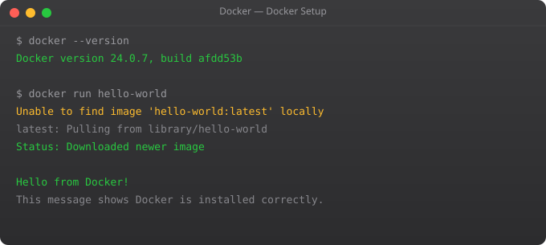

Let me tell you about a morning I will not forget. I was a junior developer, excited to contribute to my first real team project. I pulled the code, ran npm install, ran npm start, and got a wall of errors. The lead developer's response? "Works on my machine." Three days later, after installing the exact right version of Node, the exact right version of some C library, and modifying two config files, it finally worked on mine too.
This is the problem Docker was built to eliminate. And it did. That "works on my machine" problem that wasted millions of engineering hours per year across the industry — Docker made it essentially obsolete. Once you containerize an application with Docker, it runs identically everywhere: your laptop, your teammate's machine, the CI server, production. The container is the consistency guarantee.
In this first part, we will not install Docker yet. We will understand why Docker exists, because understanding the problem makes the solution obvious. Every concept in Docker — images, containers, registries, Dockerfiles — makes much more sense once you understand what they are solving.
Before containers, deploying software meant managing servers directly. You would install an operating system, manually configure it, install the right runtime versions, copy over application code, set environment variables, and pray that nothing conflicted with something already on the server. Every deployment was a custom job.
Teams tried to solve this with configuration management tools like Chef, Puppet, and Ansible. These tools automated server configuration, but the fundamental problem remained: the application was still tied to the specific state of the server. And servers drifted over time as patches were applied, packages were installed, and configurations were manually tweaked.
The next solution was virtual machines. A VM emulates a complete computer — CPU, RAM, storage, and a full operating system. You could create a VM image with your application and everything it needed, then deploy that exact image anywhere. This worked, but VMs are heavy: a typical VM image is several gigabytes, takes minutes to start, and requires significant CPU and RAM overhead just to run the virtualization layer.
A container is like a VM but without the bloat. Instead of virtualizing the entire hardware stack and running a separate OS kernel, containers share the host operating system's kernel but run in isolated user-space processes. Each container gets its own filesystem, network interface, and process space — complete isolation — but without the overhead of a full OS.
The practical difference is dramatic. A Docker container for a Python application might be 100–200MB and start in under a second. The equivalent VM would be 2–5GB and take 2–3 minutes to boot. You can run 50 containers on a machine where you could only run 5 VMs.
Linux containers are not new — the kernel features that make them possible (namespaces and cgroups) have existed since around 2006. What Docker did in 2013 was build an elegant, developer-friendly toolchain on top of those kernel features, making containers accessible to anyone. That is why Docker adoption happened so fast.
Docker's entire system builds on three concepts. Once you understand these, the rest of Docker clicks.
A Docker Image is a read-only blueprint for a container. It is built from a Dockerfile — a text file containing step-by-step instructions. The image contains your application code, its dependencies, the runtime, and configuration. Images are immutable: once built, they never change. They can be stored in a registry and pulled onto any machine.
A Docker Container is a running instance of an image. You can run many containers from one image simultaneously. Each container is isolated — it has its own filesystem, network, and processes. When you stop and delete a container, the image that created it is untouched.
A Docker Registry is where images are stored and shared. Docker Hub is the default public registry. AWS ECR, GitHub Container Registry, and GCP Artifact Registry are popular private registries used in production. The registry is to Docker what GitHub is to Git — a place to store and share your work.
Here is the practical flow: you write a Dockerfile describing how to build your application's image. You run docker build to create the image. You run docker run to start a container from that image. You run docker push to upload the image to a registry. On any other machine, you run docker pull to download the image and docker run to start it.
FROM python:3.11-slim # Start from official Python image
WORKDIR /app # Set working directory inside container
COPY requirements.txt . # Copy dependency file
RUN pip install -r requirements.txt # Install dependencies
COPY . . # Copy application code
EXPOSE 5000 # Document the port (doesn't open it)
CMD ["python", "app.py"] # Command to run when container startsEvery developer on your team, every CI server, every production machine runs the exact same image built from this file. The environment stops being a variable. That is the fundamental promise Docker delivers.
The question "containers vs VMs" comes up constantly. The honest answer is: they solve different problems and are often used together.
Virtual machines provide strong isolation at the hardware level. They are best for running multiple different operating systems on one physical host, for workloads that require complete OS-level isolation for security, or when running Windows workloads on Linux infrastructure. VMs are how cloud providers like AWS split physical servers into EC2 instances.
Containers provide lightweight, fast, consistent application packaging. They are best for running many instances of the same application, for microservices architectures where dozens of services need to run efficiently, and for CI/CD pipelines where speed matters. Containers are how applications run inside EC2 instances.
In production, a typical setup is: the cloud provider runs your VMs (EC2 instances), and inside those VMs, you run Docker containers. Kubernetes orchestrates those containers across many VMs. Each layer is doing what it is best at.
Docker is now the default packaging standard for software. If you plan to work in cloud computing, DevOps, backend development, or data engineering, you will use Docker daily. Learning it is not optional — it is foundational. In Part 2, we install Docker, understand the Docker daemon and CLI architecture, and run our first containers hands-on. That is where the real learning begins.
Docker solves the 'it works on my machine' problem. By packaging an application with all its dependencies into a container, Docker ensures the application runs identically on any machine — developer laptops, CI servers, and production environments — eliminating environment inconsistency.
A Docker image is a read-only blueprint — a packaged snapshot of your application and its dependencies. A Docker container is a running instance created from an image. One image can run many containers simultaneously. Deleting a container does not affect the image it came from.
No. Virtual machines virtualise the entire hardware stack and run a separate OS kernel — they are heavy (GBs) and slow to start (minutes). Containers share the host OS kernel and only package the application and its user-space dependencies — they are lightweight (MBs) and start in seconds.
Basic Linux command-line knowledge is helpful since most Docker containers run Linux-based images. You should be comfortable with file paths, running commands in a terminal, and understanding file permissions. The deeper Linux internals are not required for using Docker effectively.
Docker images are stored in registries. Docker Hub is the default public registry where official images for nginx, Python, Node, PostgreSQL etc. are published. For production, companies use private registries like AWS ECR, GitHub Container Registry, or GCP Artifact Registry to store their own application images.